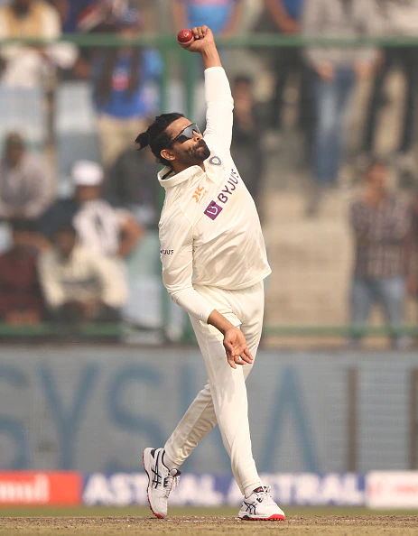

Ravindra Jadeja

IPL through the years
Jadeja's rise does have a lot to do with Dhoni's undying support but it was actually the IPL that found the Saurashtra boy - or rather the legendary Shane Warne to be precise. As captain of the Rajasthan Royals, the Australian spotted Jadeja's prowess and had said back in 2008-09 that this 'Rockstar' would go places. He wasn't wrong at all. After featuring for Rajasthan briefly, Jadeja became an integral part of the Chennai outfit till the squad was briefly suspended after the 2015 season. During the side's two-year hiatus, its players were scattered across and Jadeja found himself with his native Gujarat franchise - a temporary side. With the Chennai squad returning from the 2018 season onwards, he was among the three people retained - proof enough of how much he is valued there.
After an outstanding 2021 IPL where he scored 227 runs and took 13 wickets, Jadeja was hot property ahead of the 2022 mega auction. CSK splurged INR 16 crore to acquire his services and made him captain. But after just 2 wins in their first 8 games, Jadeja handed back the captaincy to MS Dhoni to concentrate on his own game. He was subsequently ruled out of the season due to a rib injury. After reports of a rift between the franchise and Jadeja, the allrounder was reportedly spoken to and returned for the 2023 season.
Records
He was the first Indian player and eighth overall, to score three first-class triple centuries in his career.
Third cricketer for India to score 2,000 runs and take 150 wickets in ODIs.
Second Indian player to complete a double of 2000 runs and 200 wickets in ODIs.
Second to complete the double of 2000 runs and 200 wickets in both ODI and test.
Awards and Accolades
ICC World ODI XI: 2013, 2016.
Madhavrao Scindia Award for most wickets in Ranji Trophy: 2008–09.
Ranked 2nd in ICC Top 10 Test all-rounders (2018).
Named in the Test XI of the Year by Cricbuzz in 2013.
Ranked No.1 bowler in ODI Cricket by the ICC in August 2013
Arjun Award in 2019
Awards and Accoladesc
ICC World ODI XI: 2013, 2016.
Madhavrao Scindia Award for most wickets in Ranji Trophy: 2008–09.
Ranked 2nd in ICC Top 10 Test all-rounders (2018).
Named in the Test XI of the Year by Cricbuzz in 2013.
Ranked No.1 bowler in ODI Cricket by the ICC in August 2013v
Arjun Award in 2019
Ravindra Jadeja IPL Career
Ravindra Jadeja made his IPL debut for Rajasthan Royals, in the inaugural season of the Indian Premier League in 2008. Jadeja was crucial in the Royals' victory in the season. Shane Warne, the captain of Rajasthan Royals in 2008, remarked to Jadeja as a "superstar in the making" and nicknamed him a "Rockstar".
Jadeja was out of the 2010 IPL due to a ban resulting from contractual irregularities. In 2011, Jadeja was roped in by the Kochi Tuskers Kerala for a total of $950,000. However, the Kochi Tuskers’ team was itself terminated from the IPL in September 2011.
In the 2012 IPL player auction, Jadeja was the most expensive player and was bought by Chennai Super Kings for $2 million (approx. Rs. 98 million). Jadeja moved to Gujarat Lions after the two-year ban of Chennai Super Kings in 2016. He returned to the franchise in 2018 and was a part of CSK’s victorious campaign.
Ravindra Jadeja International Career
In 2009, he took his first step into International cricket with the ODI format and soon he also appeared in the shortest format in the same series but it took three years for him to make his entrance into Test cricket.
His career has grown over the years as he performed immensely well and helped India to win various trophies. Currently, he is one of the greatest all-rounders across all formats in the world and has cemented his position in the squad.
Ravindra Jadeja T20 International Career
Following his ODI debut, Jadeja made his way into the T20I squad. But in the 2009 World Twenty20, Jadeja was criticized for his slow batting in India's loss to the England cricket team. Jadeja however improved on his game and to date continues to impress with his skills. As far as T20 was concerned, Jadeja became the go-to bowler whenever a wicket was needed. In a T20 match against Australia, Jadeja was awarded Man of the Match, mainly for his fielding effort.
He has proven himself in this format over the years and IPL helped him a lot to grow in this setup. As of April 2024, Ravindra Jadeja has played 66 T20I in which he has scored 480 runs with the best score of 46 and has 53 dismissals to his name.
Ravindra Jadeja Test Career
Jadeja had a brilliant start to the 2012–13 Ranji Trophy season. He scored not one but two 300+ scores in 4 matches. This earned him his maiden test call-up. Jadeja was brought in to join the 15-member India Test team. Jadeja made his debut in the fourth Test against England at Nagpur. In his Test debut, Jadeja bowled 70 overs and finished with the figures: 3/117.
With the years passing Jadeja has established himself as a mature Test player and has helped India to grow with his all-round performances. As of April 2024, he has played 72 Test matches and scored 3036 runs at 36.14 with the help of four tons and 20 fifties. Along with his decent batting at the lower middle order, he bowls as a full-time bowler, in 72 games he is just six wickets short of completing his 300 wickets in Test cricket.
Ravindra Jadeja Captaincy Record
Ravindra Jadeja was assigned as the deputy of Virat Kohli in 2008 U-19 World Cup and India ends up by winning the tournament. Ravindra Jadeja was also assigned as the captain of his IPL team Chennai Super Kings in 2022 season for the first eight games where he could only manage to win two games and then taken then removed from his designation.
Ravindra Jadeja Under 19 Career
Ravindra Jadeja has been part of two U-19 World Cup tournaments 2006 and 2008. In 2006 India lost to Pakistan in the final where Jadeja’s performance was average, he scored 34 runs in four games and picked four wickets in the same number of games.
In the 2008 World Cup, India became the champions by beating South Africa in the final under Virat Kohli. Ravindra Jadeja’s performance in the tournament was against average where he scored 24 runs in six games and picked 10 wickets.